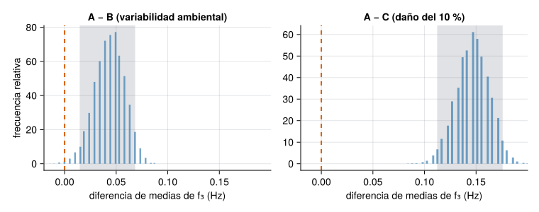
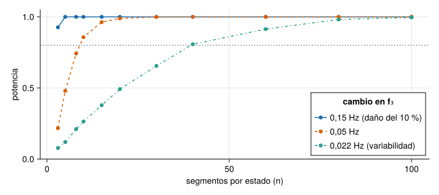
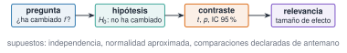

«La frecuencia del tercer modo ha bajado 0,04 Hz respecto del mes pasado.» ¿Y qué? Si la frecuencia estimada fluctúa 0,03 Hz de un tramo de registro a otro, esa bajada puede ser puro ruido. La inferencia estadística es la forma disciplinada de contestar: ¿es esta diferencia mayor de lo que cabría esperar por azar?, ¿entre qué valores está el cambio real?, ¿es lo bastante grande como para importar?, ¿y cuántos datos habría hecho falta tener para verlo? Esta unidad responde con el caso de la vía M: ¿ha cambiado la frecuencia del edificio?
NotaCómo se lee esta unidad
Tiempo orientativo: 90 minutos. Objetivos (4), teoría en cinco píldoras (18), práctica guiada (40), «Pídeselo a Claude» (12), ejercicios (14) y cierre (2). Se usan las 10 estimaciones de frecuencia por estado (segmentos de 60 s) de J2.4. Los resultados con simulación dependen de la semilla (J2.5).
Objetivos y prerrequisitos
Objetivos. Al terminar esta unidad sabrás:
formular una hipótesis nula, calcular un contraste y interpretar bien el p-valor (y los errores de tipo I y II);
comparar dos grupos con el contraste t de Welch y con uno no paramétrico (Mann–Whitney);
construir un intervalo de confianza con bootstrap y contrastarlo con el teórico;
distinguir significación estadística de relevancia práctica con un tamaño de efecto, y corregir comparaciones múltiples;
calcular la potencia de un contraste y el tamaño de muestra necesario.
Prerrequisitos. El curso no los impone en el temario; conviene J2.4 (las estimaciones por segmentos) y J2.5 (distribuciones, simulación y semillas).
Reparto con otras unidades. Aquí se aprende el contraste y su interpretación. La regresión está en J2.7 y el seguimiento continuo de frecuencias con control estadístico, en M7.
Teoría breve
NotaUn poco de historia: el contraste t y la cervecería
El contraste t nació de una necesidad industrial. William Sealy Gosset trabajaba en la cervecería Guinness y necesitaba sacar conclusiones fiables de muestras pequeñas; como la empresa no permitía a su personal publicar con su nombre, firmó su artículo de 1908 en la revista Biometrika con el seudónimo «Student» (Student (Gosset 1908). De ahí que se llame «t de Student»; su trabajo no fue apreciado del todo hasta que Fisher generalizó la distribución t. Casi todas las comparaciones entre dos grupos de esta unidad descienden de aquel artículo.
Fuente: Student (1908) (Student (Gosset 1908); los hechos (seudónimo, restricción de la empresa, papel posterior de Fisher) proceden de fuentes secundarias sobre historia de la estadística; volumen y páginas del artículo sin cotejar. Consultado el 26-10-2026.
J2.6.1 Hipótesis, p-valor y errores
Un contraste empieza con una hipótesis nula\(H_0\) («la frecuencia no ha cambiado») y un estadístico que mide lo lejos que están los datos de ella. El p-valor es la probabilidad de obtener un resultado tan extremo o más que el observado si \(H_0\) fuera cierta. No es la probabilidad de que \(H_0\) sea cierta ni de que el cambio sea real: es una medida de lo sorprendentes que serían los datos sin cambio. Se fija un nivel \(\alpha\) (típicamente 0,05) y se rechaza\(H_0\) si \(p<\alpha\). Esto implica dos errores posibles: el tipo I (rechazar \(H_0\) siendo cierta, con probabilidad \(\alpha\)) y el tipo II (no rechazarla siendo falsa, con probabilidad \(\beta\); la potencia es \(1-\beta\)).
Se ve con una simulación: 10 000 comparaciones entre dos muestras de 10 valores de la misma normal (no hay cambio real), y se cuenta cuántas veces el contraste «detecta» un cambio:
Un 4,8 % de las veces se «detecta» un cambio que no existe: es el \(\alpha\) del 5 % en acción. Una de cada veinte comparaciones sin cambio real sale «significativa».
AdvertenciaErrores frecuentes
Interpretar \(p=0{,}01\) como «hay un 99 % de probabilidad de que haya cambio». (2) Decir «no hay diferencia» cuando \(p>0{,}05\): significa que no se ha podido detectar, no que no exista (puede faltar potencia). (3) Mirar muchas comparaciones y quedarse con la que sale significativa. (4) Dar solo el p-valor, sin la magnitud de la diferencia ni su intervalo.
Un p-valor de 0,03 significa que hay un 3 % de probabilidad de que la hipótesis nula sea cierta.
Falso. Significa que, si \(H_0\) fuera cierta, el 3 % de las veces se obtendría un resultado igual o más extremo. No es la probabilidad de la hipótesis.
J2.6.2 Comparar dos grupos: t de Welch y Mann–Whitney
Para comparar la media de dos grupos independientes se usa el contraste t de Welch (UnequalVarianceTTest), que no supone varianzas iguales. Devuelve el estadístico, los grados de libertad, el p-valor y el intervalo de confianza del 95 % de la diferencia de medias. Como alternativa que no supone normalidad está el contraste de Mann–Whitney (MannWhitneyUTest), basado en rangos. Si los dos coinciden, la conclusión es robusta. Se aplica a las estimaciones de frecuencia por segmentos de 60 s de J2.4 (10 por estado):
Ver el código
leer(esc) = CSV.read(RAIZ *"datos/sinteticos/edificio-3-plantas/escenario_$esc.csv", DataFrame; delim=';')datos =Dict(esc =>leer(esc).a3_ms2 for esc in ("A", "B", "C"))f3 =Dict(e=>frecuencia_pico_por_segmentos(y, 100.0; seg=6000, banda=(3.8, 5.0)) for (e, y) in datos)f1 =Dict(e=>frecuencia_pico_por_segmentos(y, 100.0; seg=6000, banda=(0.8, 1.5)) for (e, y) in datos)d_cohen(a, b) = (mean(a) -mean(b)) /sqrt((var(a) +var(b)) /2)functioncomparar(F, modo) filas = []for (u, v) in (("A", "B"), ("A", "C"), ("B", "C")) t =UnequalVarianceTTest(F[u], F[v]); mw =MannWhitneyUTest(F[u], F[v]); ic =confint(t)push!(filas, (modo = modo, comparacion ="$u − $v", dif_Hz =mean(F[u]) -mean(F[v]), t = t.t, gl = t.df, p_t =pvalue(t), ic95_inf = ic[1], ic95_sup = ic[2], d =d_cohen(F[u], F[v]), p_MW =pvalue(mw)))endreturnDataFrame(filas)endtabla =vcat(comparar(f3, "f₃"), comparar(f1, "f₁"))mapcols(c ->eltype(c) <: AbstractFloat ? [x <1e-3 ? round(x, sigdigits=2) :round(x, digits=4) for x in c] : c, tabla)
6×10 DataFrame
Row
modo
comparacion
dif_Hz
t
gl
p_t
ic95_inf
ic95_sup
d
p_MW
String
String
Float64
Float64
Float64
Float64
Float64
Float64
Float64
Float64
1
f₃
A − B
0.0439
2.862
17.9977
0.0104
0.0117
0.0762
1.2799
0.0162
2
f₃
A − C
0.1465
8.5812
17.424
1.1e-7
0.1105
0.1824
3.8376
0.00015
3
f₃
B − C
0.1025
6.0343
17.3558
1.2e-5
0.0667
0.1383
2.6986
0.00027
4
f₁
A − B
0.0049
0.3974
15.096
0.6967
-0.021
0.0311
0.1777
0.6192
5
f₁
A − C
0.0342
4.2
16.6914
0.00062
0.017
0.0514
1.8783
0.0025
6
f₁
B − C
0.0293
2.5456
12.7696
0.0247
0.0044
0.0542
1.1384
0.0239
Lo que dice la tabla, para el tercer modo: A frente a C (el daño del 10 % en un entrepiso) tiene una diferencia de 0,147 Hz con \(t=8{,}6\) y \(p\approx10^{-7}\): hay un cambio y es enorme. A frente a B (la variabilidad ambiental, −1 % de rigidez) tiene una diferencia de 0,044 Hz con \(p=0{,}010\) y Mann–Whitney da 0,016: también estadísticamente distinguible, con un intervalo del 95 % de 0,012 a 0,076 Hz. En el primer modo, en cambio, A y B no se distinguen (\(p=0{,}70\)), mientras que A y C sí (\(p=6\cdot10^{-4}\)).
¿Cuánto vale el estadístico \(t\) de Welch al comparar el tercer modo de A con el de C?
8,58 (con 17,4 grados de libertad): la diferencia de 0,147 Hz equivale a casi 9 errores típicos.
J2.6.3 Intervalos con bootstrap
El bootstrap estima la incertidumbre de un estadístico remuestreando los propios datos: se extraen, con reemplazo, muestras del mismo tamaño que la original, se calcula el estadístico en cada una y se toman los percentiles 2,5 % y 97,5 % de los resultados como intervalo del 95 %. No supone normalidad y sirve para estadísticos sin fórmula sencilla (medianas, cocientes). Para la diferencia de medias de las frecuencias:
Ver el código
functionbootstrap(x, y; B=10_000, seed=1) rng =Xoshiro(seed) [mean(rand(rng, x, length(x))) -mean(rand(rng, y, length(y))) for _ in1:B]endb_ab =bootstrap(f3["A"], f3["B"])b_ac =bootstrap(f3["A"], f3["C"])t_ab =confint(UnequalVarianceTTest(f3["A"], f3["B"]))t_ac =confint(UnequalVarianceTTest(f3["A"], f3["C"]))DataFrame(comparacion=["A − B", "A − C"], dif_media_Hz=round.([mean(f3["A"]) -mean(f3["B"]), mean(f3["A"]) -mean(f3["C"])], digits=4), bootstrap_ic95=[round.(quantile(b, [0.025, 0.975]), digits=4) for b in (b_ab, b_ac)], t_de_Welch_ic95=[round.(t, digits=4) for t in (t_ab, t_ac)])
2×4 DataFrame
Row
comparacion
dif_media_Hz
bootstrap_ic95
t_de_Welch_ic95
String
Float64
Array…
Tuple…
1
A − B
0.0439
[0.0146, 0.0684]
(0.0117, 0.0762)
2
A − C
0.1465
[0.1123, 0.1758]
(0.1105, 0.1824)
Los dos intervalos son parecidos (0,015–0,068 frente a 0,012–0,076 para A − B): el bootstrap es algo más estrecho porque con solo 10 datos por grupo subestima ligeramente la variabilidad. Que coincidan en lo esencial refuerza la conclusión.
Ver el código
let fig =Figure(size=(760, 300))for (j, (b, titulo)) inenumerate([(b_ab, "A − B (variabilidad ambiental)"), (b_ac, "A − C (daño del 10 %)")]) ax =Axis(fig[1, j], title=titulo, xlabel="diferencia de medias de f₃ (Hz)", ylabel=j ==1 ? "frecuencia relativa":"") lo, hi =quantile(b, [0.025, 0.975])vspan!(ax, lo, hi, color=(GRIS, 0.2))hist!(ax, b, bins=60, normalization=:pdf, color=(AZUL, 0.6))vlines!(ax, 0, color=NARANJA, linestyle=:dash, linewidth=2)xlims!(ax, -0.02, 0.2)end figend

Figura 1: Distribución bootstrap de la diferencia de medias de la frecuencia del tercer modo (10 000 remuestreos). Izquierda: A − B; derecha: A − C. La banda sombreada es el intervalo del 95 % y la línea discontinua marca el cero («sin cambio»). En A − B el cero queda fuera del intervalo, pero cerca; en A − C, muy lejos.
J2.6.4 Significativo no es lo mismo que relevante
Un p-valor pequeño dice que hay una diferencia detectable, no que importe. Con muchos datos, cualquier diferencia minúscula sale «significativa». Para valorar su tamaño se usa un tamaño de efecto, como la d de Cohen (diferencia de medias entre la desviación típica combinada): en torno a 0,2 es pequeño, 0,5 mediano y 0,8 grande (valores orientativos habituales). Aquí, A − B tiene \(d=1{,}3\) (grande en relación con el ruido de las estimaciones) y A − C, \(d=3{,}8\). Pero la pregunta de ingeniería es otra: ¿cuánto cambio de frecuencia corresponde a un cambio que importe? La diferencia A − B es un 1 % de la frecuencia (variabilidad ambiental, benigna) y A − C un 3,3 % (un daño del 10 % en un entrepiso). La estadística dice que ambas son detectables; solo la física distingue la inocua de la que no.
Y cuando se hacen varios contrastes a la vez, la probabilidad de algún falso positivo crece: con 6 comparaciones sin cambio real, es de \(1-0{,}95^6=26\,\%\). La corrección más simple, la de Bonferroni, multiplica cada p-valor por el número de comparaciones:
Ver el código
comparaciones = tabla[:, [:modo, :comparacion, :p_t]]comparaciones.p_corregido =min.(1.0, nrow(comparaciones) .* comparaciones.p_t)comparaciones.significativo_tras_corregir = comparaciones.p_corregido .<0.05(probabilidad_de_algun_falso_positivo_en_6 =round(1-0.95^6, digits=3), tabla =mapcols(c ->eltype(c) <: AbstractFloat ? [x <1e-3 ? round(x, sigdigits=2) :round(x, digits=3) for x in c] : c, comparaciones))
(probabilidad_de_algun_falso_positivo_en_6 = 0.265, tabla = 6×5 DataFrame Row │ modo comparacion p_t p_corregido significativo_tras_corregir │ String String Float64 Float64 Bool
─────┼────────────────────────────────────────────────────────────────────────
1 │ f₃ A − B 0.01 0.062 false
2 │ f₃ A − C 1.1e-7 6.9e-7 true
3 │ f₃ B − C 1.2e-5 7.4e-5 true
4 │ f₁ A − B 0.697 1.0 false
5 │ f₁ A − C 0.00062 0.004 true
6 │ f₁ B − C 0.025 0.148 false)
Tras corregir por 6 comparaciones, el contraste A − B del tercer modo deja de ser significativo (\(p=0{,}062\)) y el B − C del primer modo, también (\(p=0{,}15\)); siguen siéndolo A − C en los dos modos y B − C en el tercero. La corrección de Bonferroni es conservadora; lo importante es declarar de antemano cuántas comparaciones se harán.
El contraste A − B del tercer modo tiene \(p=0{,}0104\). ¿Cuál es el p-valor corregido por Bonferroni para 6 comparaciones?
\(6\cdot0{,}0104=0{,}062\): ya no es menor que 0,05.
J2.6.5 Potencia y tamaño de muestra
La potencia es la probabilidad de detectar un cambio que existe de verdad. Depende de tres cosas: el tamaño del cambio \(\delta\), la variabilidad \(\sigma\) y el número de datos por grupo \(n\). Una aproximación para dos grupos y un nivel de 0,05 con potencia del 80 % es
\[
n \approx \frac{2\,(z_{1-\alpha/2}+z_{1-\beta})^2\,\sigma^2}{\delta^{2}} ,\qquad \delta_{\min}\approx(z_{1-\alpha/2}+z_{1-\beta})\,\sigma\sqrt{2/n},
\tag{1}\]
con \(z_{0{,}975}+z_{0{,}8}=1{,}96+0{,}84=2{,}80\). Con la dispersión de las estimaciones del tercer modo (\(\sigma\approx0{,}035\) Hz):
Con 10 segmentos (10 minutos de registro) el cambio mínimo detectable con un 80 % de potencia es de 0,044 Hz (un 1 %): justo lo que se mide entre A y B, y por eso ese contraste está en el límite. Para detectar el cambio que predice el modelo para B (0,022 Hz, la mitad) harían falta 40 segmentos por estado, es decir, 40 minutos. El daño del 10 % (0,15 Hz) se detecta sin problemas con solo 3 segmentos por estado. (La fórmula da \(n=1\) para ese cambio, pero con tan pocos datos deja de valer la aproximación normal y se necesitan al menos dos por grupo; la simulación confirma una potencia superior al 80 % con 3.)
Ver el código
let ns = [3, 5, 8, 10, 15, 20, 30, 40, 60, 80, 100] fig =Figure(size=(720, 320)) ax =Axis(fig[1, 1], xlabel="segmentos por estado (n)", ylabel="potencia", limits=(nothing, (0, 1.05)))hlines!(ax, 0.8, color=GRIS, linestyle=:dot)for (δ, color, estilo, etiqueta) in [(0.15, AZUL, :solid, "0,15 Hz (daño del 10 %)"), (0.05, NARANJA, :dash, "0,05 Hz"), (0.0221, VERDE, :dashdot, "0,022 Hz (variabilidad)")]scatterlines!(ax, ns, [potencia(δ, n) for n in ns], color=color, linestyle=estilo, label=etiqueta)endaxislegend(ax, "cambio en f₃", position=:rb) figend

Figura 2: Potencia del contraste t de Welch (simulación, nivel 0,05) en función del número de segmentos por estado, para tres tamaños de cambio en la frecuencia del tercer modo con σ = 0,035 Hz. La línea punteada marca el 80 % de potencia. El daño del 10 % (0,15 Hz) se detecta con muy pocos segmentos; el efecto de la variabilidad ambiental (0,022 Hz) necesita unos 40.

Figura 3: El camino de los datos a la decisión: cada flecha es una elección (hipótesis, contraste, umbral) que hay que justificar, y al final hay que preguntarse si el cambio importa.
NotaIdea clave
Un buen informe estadístico no dice solo «p = 0,01»: da la diferencia estimada, su intervalo de confianza, el tamaño de efecto, cuántas comparaciones se hicieron y qué potencia tenía el estudio. Y deja la decisión final a la física del problema.
Pregunta:¿ha cambiado la frecuencia del edificio? Se tienen tres estados (referencia A, variabilidad ambiental B y daño C) con 10 estimaciones de frecuencia por modo y estado. Se aplica un protocolo en cuatro pasos y se redacta la conclusión.
Paso 1. Declarar el plan antes de mirar. Seis comparaciones (tres pares por dos modos), contraste de Welch con confirmación de Mann–Whitney, nivel 0,05 con corrección de Bonferroni. Ya está hecho en la tabla de la píldora 2 y en la de la píldora 4.
Paso 2. Resumir las decisiones por modo.
Ver el código
resumen =DataFrame( modo=comparaciones.modo, comparacion=comparaciones.comparacion, dif_Hz=round.(tabla.dif_Hz, digits=4), d=round.(tabla.d, digits=2), p_corregido=[x <1e-3 ? round(x, sigdigits=2) :round(x, digits=3) for x in comparaciones.p_corregido], decision=[ifelse(p <0.05, "cambio detectable", "no detectado") for p in comparaciones.p_corregido])resumen
6×6 DataFrame
Row
modo
comparacion
dif_Hz
d
p_corregido
decision
String
String
Float64
Float64
Float64
String
1
f₃
A − B
0.0439
1.28
0.062
no detectado
2
f₃
A − C
0.1465
3.84
6.9e-7
cambio detectable
3
f₃
B − C
0.1025
2.7
7.4e-5
cambio detectable
4
f₁
A − B
0.0049
0.18
1.0
no detectado
5
f₁
A − C
0.0342
1.88
0.004
cambio detectable
6
f₁
B − C
0.0293
1.14
0.148
no detectado
Paso 3. La conclusión, con cuidado. Frente a la referencia A:
Estado C (daño del 10 % en un entrepiso): cambio detectable en ambos modos tras corregir, con una diferencia de 0,147 Hz (3,3 %) en el tercer modo y 0,034 Hz (3,1 %) en el primero. Detección robusta.
Estado B (variabilidad ambiental, −1 % de rigidez):no detectable tras corregir por comparaciones múltiples (y, en el primer modo, ni siquiera sin corregir). Con 10 segmentos solo se detectan cambios de unos 0,044 Hz, y el efecto modelado de B es de 0,022 Hz.
B frente a C: detectable en el tercer modo: el contraste sí distingue la variabilidad del daño con 10 segmentos por estado. En el primer modo no (tras corregir).
Paso 4. ¿Cuánto registrar? Si el objetivo fuera detectar también la variabilidad ambiental de B (0,022 Hz) con un 80 % de potencia, harían falta 40 segmentos por estado (40 minutos); para detectar el daño, bastan unos pocos.
La versión probada con pytest, contrastada con los resultados de Julia, está en python/inferencia.py: welch_t, d_cohen, bootstrap_dif, potencia y la estimación de frecuencias por segmentos con scipy.signal.welch.
scipy.stats ofrece ttest_ind(equal_var=False) (Welch, con intervalo de confianza en el resultado), mannwhitneyu y bootstrap; statsmodels añade cálculos de potencia (TTestIndPower), aunque aquí se hace por simulación para ver qué ocurre.
NotaQué se ha conseguido
Un protocolo completo para decidir si ha cambiado una frecuencia: plan declarado, contraste de Welch confirmado con Mann–Whitney, intervalos con bootstrap, tamaño de efecto, corrección por comparaciones múltiples, y un cálculo de cuántos datos hacen falta para ver un cambio dado. La conclusión: el daño del 10 % se detecta con claridad y la variabilidad ambiental, no, salvo que se registre unas cuatro veces más.
«Pídeselo a Claude»
TipPrompt
«Con Julia, --project=., HypothesisTests.jl y Resonancia.jl: para los registros escenario_A.csv, escenario_B.csv y escenario_C.csv del edificio (separador ;, 100 Hz, columna a3_ms2), estima con frecuencia_pico_por_segmentos (segmentos de 6000 muestras, banda 3,8–5,0 Hz) la frecuencia del tercer modo en 10 segmentos por estado. Compara A con B y A con C con el contraste t de Welch y con Mann–Whitney, y da en cada caso la diferencia de medias, el intervalo de confianza del 95 %, el p-valor, la d de Cohen y un intervalo bootstrap (10 000 remuestreos, semilla 1). Corrige los p-valores por Bonferroni suponiendo 6 comparaciones. Dime cuántos segmentos por estado harían falta para detectar con un 80 % de potencia un cambio de 0,022 Hz con σ = 0,035 Hz. No concluyas «daño» solo por un p-valor pequeño. No inventes cifras.»
Verifica. (a) Que A − C da \(t\approx8{,}58\), \(p\approx10^{-7}\) y un intervalo de 0,11 a 0,18 Hz. (b) Que A − B da \(p\approx0{,}010\) (sin corregir) y 0,062 corregido, con \(d\approx1{,}3\). (c) Que los intervalos bootstrap y teórico son parecidos. (d) Que el número de segmentos para 0,022 Hz es de unos 40. (e) Que la conclusión distingue lo estadísticamente detectable de lo relevante, y que B no se presenta como daño.
Ejercicios
¿Cuántos segmentos por estado hacen falta para detectar con un 80 % de potencia un cambio de 0,0221 Hz con \(\sigma=0{,}035\) Hz?
\(2\cdot7{,}85\cdot0{,}001225/0{,}000488=39{,}4\), es decir, 40 segmentos.
¿Cuál es el cambio mínimo de frecuencia detectable con un 80 % de potencia usando 10 segmentos por estado (\(\sigma=0{,}035\) Hz)?
\(\delta_{\min}=2{,}80\cdot0{,}035\cdot\sqrt{2/10}=0{,}0438\) Hz, un 1 % del tercer modo.
Si \(p>0{,}05\), se puede afirmar que la frecuencia no ha cambiado.
Falso. Solo se puede decir que no se ha detectado un cambio con esos datos: puede haber faltado potencia (pocos segmentos o mucha dispersión). Hay que dar el intervalo de confianza para ver qué cambios no se pueden descartar.
Redacta en tres frases el resultado de comparar A con B en el tercer modo para un informe técnico, sin exagerar.
Da la diferencia estimada y su intervalo del 95 % (unos 0,044 Hz, de 0,012 a 0,076 Hz).
Menciona el p-valor sin y con corrección por comparaciones múltiples (0,010 y 0,062).
Aclara que B es variabilidad ambiental, no un daño, y que 10 segmentos están en el límite de detección.
La doy por superada si…
Interpreto bien el p-valor y conozco los errores de tipo I y II.
Comparo dos grupos con Welch y Mann–Whitney, y doy el intervalo de confianza.
Construyo un intervalo bootstrap y lo contrasto con el teórico.
Distingo significación de relevancia y corrijo comparaciones múltiples.
Calculo la potencia o el tamaño de muestra para un cambio dado.
Cierre. Escribe tres líneas: qué he entendido, qué todavía no domino y cuál es mi siguiente paso pequeño. Cuando Claude te dé un p-valor, pídele también la diferencia, su intervalo, el tamaño de efecto y cuántas comparaciones se hicieron.